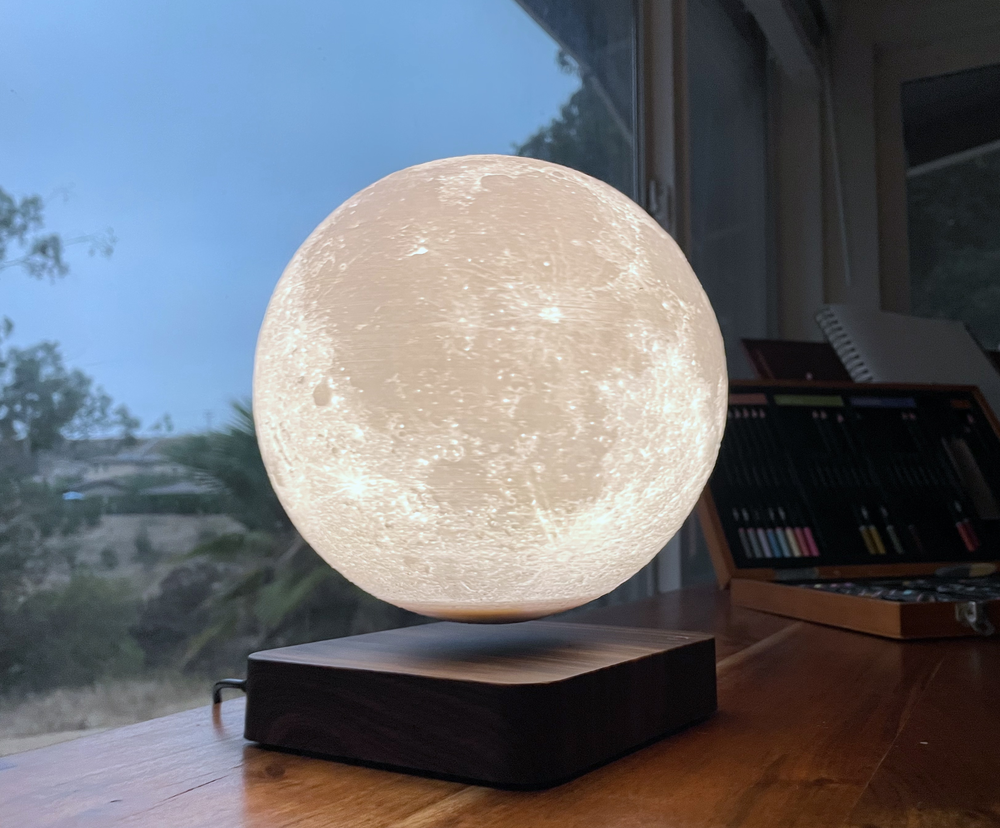
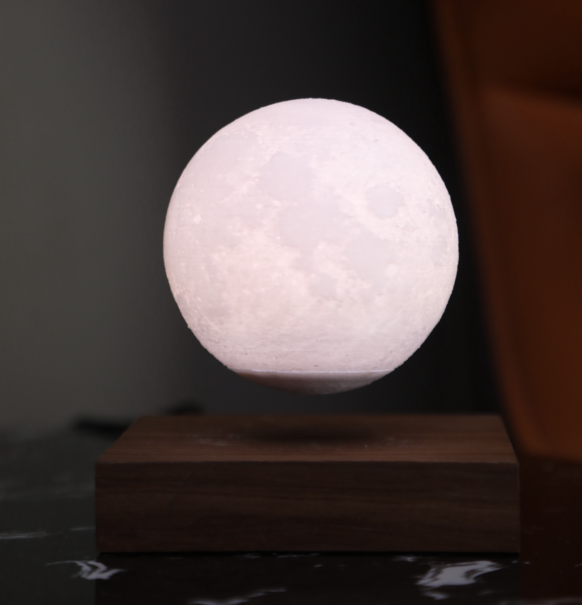

How Does a Levitating Moon Lamp Work?
The short answer: magnets. The magical answer: a precisely balanced electromagnetic field that holds a glowing moon suspended in mid-air, inches above its base, with no visible support.
Levitating moon lamps achieve their awe-inspiring floating effect through the principles of magnetic levitation (maglev). The base contains a powerful electromagnet. Inside the moon-shaped lamp is a permanent magnet. When you power the base, it generates a magnetic field that repels the lamp's internal magnet just enough to counteract gravity — creating stable levitation.
A sensing circuit inside the base continuously reads the lamp's position and adjusts the electromagnetic field in real time, making tiny corrections thousands of times per second to keep the lamp perfectly suspended.
A 14cm Levitating Moon Lamp in action.
The Science of Magnetic Levitation
Magnetic levitation is the same principle that powers maglev trains. It relies on Earnshaw's theorem and active feedback control to achieve stable levitation — which is why early levitation experiments required computers before stable levitating consumer products were possible.
The lamp uses wireless induction to power the LED inside. The base's electromagnetic field doesn't just levitate the lamp — it also transfers energy through the air to the LED inside the moon via electromagnetic induction (the same principle Faraday discovered in 1831). So the lamp glows with no battery, no wires, no contacts — just physics.
The result: a completely wireless, floating, glowing moon.
Design & Materials
Levitating moon lamps are designed to faithfully replicate the lunar surface. They typically feature:
- 3D-printed exterior — The moon's surface is printed from photorealistic NASA maps of the actual lunar surface, complete with craters, ridges, and the Mare Imbrium.
- PLA or resin — Most are made from non-toxic PLA (polylactic acid) or composite resin — both durable and capable of capturing fine surface detail.
- LED lighting — Internal LED strips or bulbs provide warm white, cool white, or full RGB color options. Modern lamps have touch-sensitive brightness control.
- Wooden base — High-end models use walnut or white ash for the base, which houses the electromagnet and wireless charging coil.
Sizes range from the mini (3") to the 7-inch (18cm) flagship size, which is the most popular for gifting and display.


3D Printing a Levitating Moon Lamp
The 3D-printed surface of levitating moon lamps is one of the most fascinating parts of their design. The process starts with real NASA topographical data of the moon's surface, converted into a 3D mesh, then printed at high resolution.
Filament choice is key: translucent white PLA is most common, as it allows the LED inside to glow through the surface while maintaining visible surface texture. The layer resolution needs to be fine enough to capture small craters while keeping the wall thickness thin enough to transmit light evenly.
Some manufacturers use custom resin for higher-end models — resin captures even finer surface detail and can be tinted to match the moon's natural grey-white coloration more accurately.
If you're interested in the 3D printing side, a standard FDM printer with a 0.2mm layer height and white/translucent PLA can produce a surprisingly good result with the right STL files (freely available online).
Gift Guide: Which Levitating Moon Lamp Is Right?
Levitating moon lamps are consistently one of the most gifted items on Amazon — especially for birthdays, Father's Day, graduation, and the holidays. Here's how to choose:
7" Levitating Moon Lamp — The flagship size. Dramatic presence, photorealistic surface, warm glow. This is the one that gets gasps when opened. Best for: birthdays, Father's Day, graduation.
View on Amazon →5.5" Levitating Moon Lamp — The desk-sized version. Perfect for offices, nightstands, or smaller spaces. Great for someone who'd appreciate a daily reminder of wonder at their desk.
View on Amazon →Levitating Galaxy Lamp — A swirling galaxy in mid-air instead of a moon. Full RGB, remote control, more dramatic light show. Ideal for kids, teens, or sci-fi enthusiasts.
View on Amazon →Setup Tips for Levitating Moon Lamps
Getting a levitating moon lamp to float the first time can feel tricky. Here's the secret:
- Power on the base first — The base needs to be on before you try to float the moon.
- Hold the moon about 1–2 inches above the center of the base — You'll feel a gentle pull from below as you approach the sweet spot.
- Release slowly — Don't drop it. Gently release while keeping it level. The electromagnetic sensing circuit will lock it in place.
- Flat surface is essential — The base must be on a completely flat, level surface for stable levitation.
- Keep away from large metal objects — Other magnets or large metal objects nearby can interfere with the field.
Most people get it floating on the first or second try once they understand the "sweet spot" — a zone about 1 inch above the base center where the fields balance perfectly.
Frequently Asked Questions
Are levitating moon lamps safe?
Yes. The electromagnetic field is very weak at distances beyond a few inches and poses no health risk. They are safe around children and pets (though keep small children from handling the magnets directly).
How long do levitating moon lamps last?
The LEDs are rated for 50,000+ hours — effectively permanent. The electromagnet and circuitry are solid-state with no moving parts. Quality lamps last many years with normal use.
Do levitating moon lamps use a lot of electricity?
No — they typically draw 3–5 watts, similar to a single LED bulb. Running 8 hours a day costs roughly $1–2 per year in electricity.
What happens if the power goes out?
The moon will drop onto the base — it won't fall far (only 1–2 inches) and the base typically has a soft pad to catch it. No damage occurs.
What size levitating moon lamp should I get?
The 7-inch (18cm) is the best all-around size — impressive enough to be a statement piece, not so large it dominates a room. The 5.5-inch is ideal for desks. The mini 3-inch is best as a small accent or budget gift.
Ready to Get One?
We've hand-picked the best-reviewed levitating moon lamps available on Amazon right now.
Browse All Lamps →* As an Amazon Associate I earn from qualifying purchases. This does not affect the price you pay. Full disclosure →